1929宇宙学
 查看全图
查看全图 选一个方向，慢慢看
宇宙图集
10 个主题 · 561 幅影像
没有找到相关影像，试试另一个名称或年份。
 01 / 59 幅星云与恒星尘埃、气体，与星光的形状
01 / 59 幅星云与恒星尘埃、气体，与星光的形状
59 幅影像
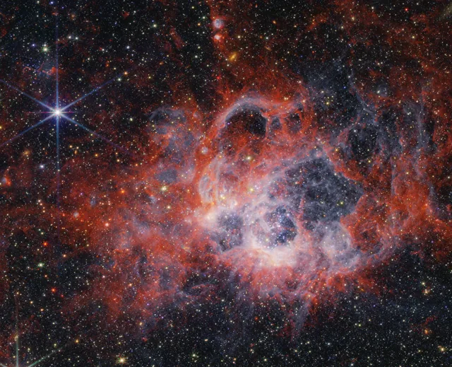
02 / 54 幅星团与恒星诞生成群的星，和诞生的现场
54 幅影像
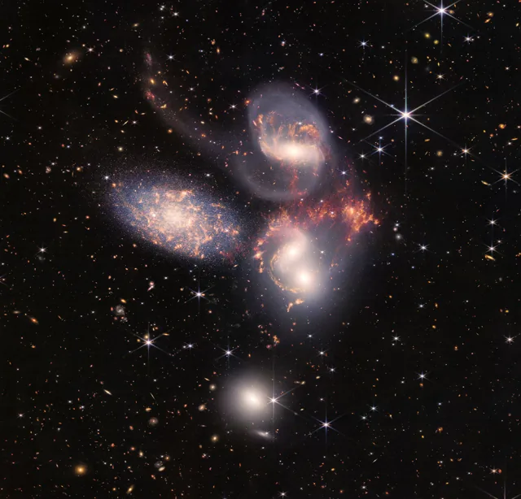
03 / 57 幅星系与深空螺旋、碰撞，与遥远的岛屿
57 幅影像
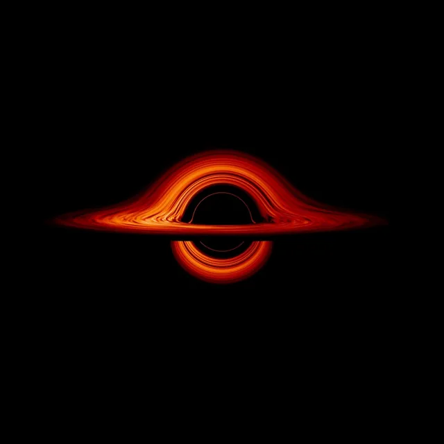
04 / 53 幅黑洞与高能宇宙致密天体、喷流与恒星遗迹
53 幅影像
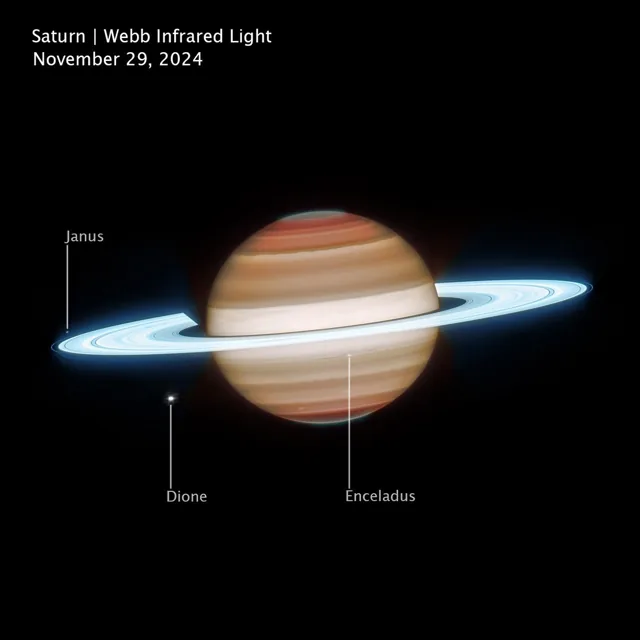
05 / 58 幅太阳系行星行星与矮行星的不同面貌
58 幅影像
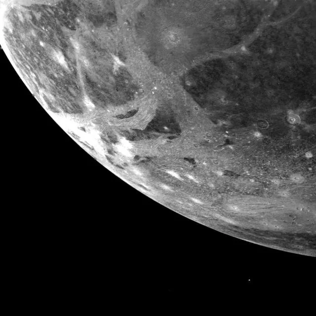
06 / 59 幅行星的卫星冰壳、火山与环行的世界
59 幅影像
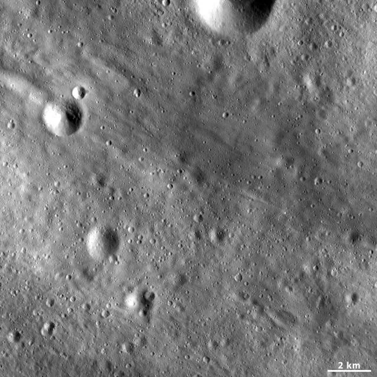
07 / 55 幅彗星与小行星太阳系早期留下的碎片
55 幅影像
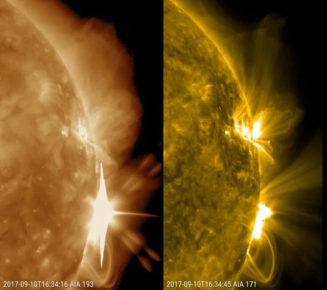
08 / 58 幅太阳与空间天气日冕、耀斑与磁场的活动
58 幅影像
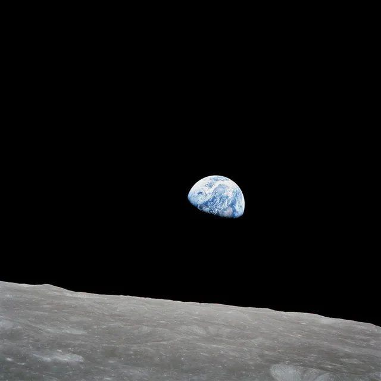
09 / 54 幅地球与月球回望家园，走近月球
54 幅影像
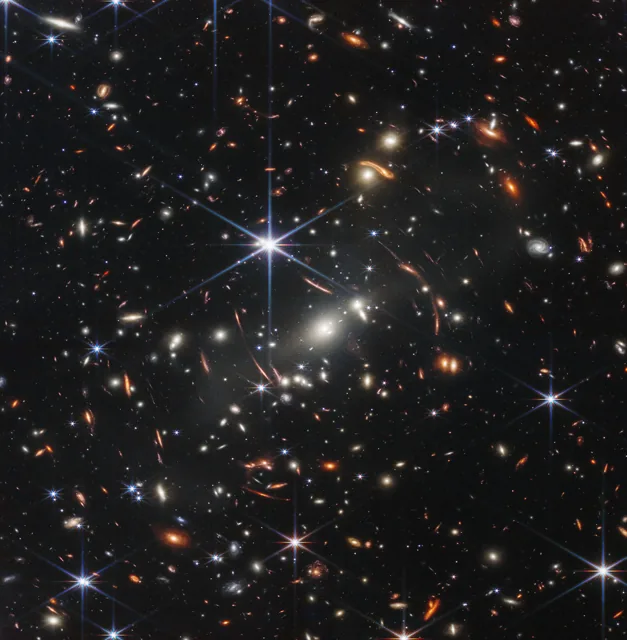
10 / 54 幅星系团与宇宙学深场、透镜与宇宙的尺度
54 幅影像
时间的回声 / THE COSMIC CHRONICLE
全球宇宙探索
从认识宇宙，到走向深空。世界各地的发现，在这里相遇。
探索的轨迹左右拖动，沿时间前行 ↔
1957航天起点
1961载人探索
1965宇宙学

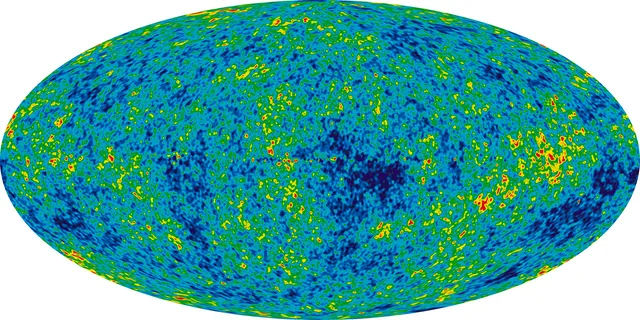
查看全图1969载人探索

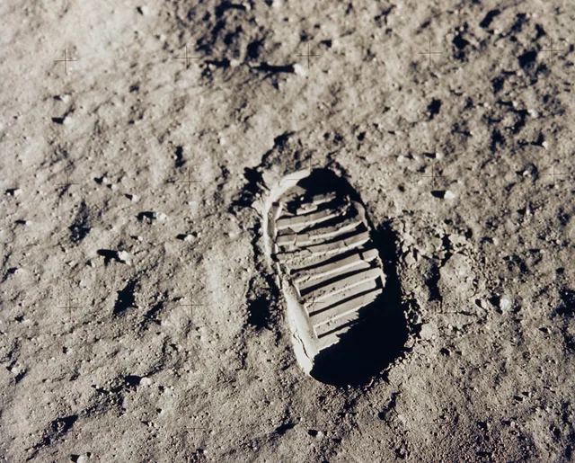
查看全图1970行星探测
1990空间天文

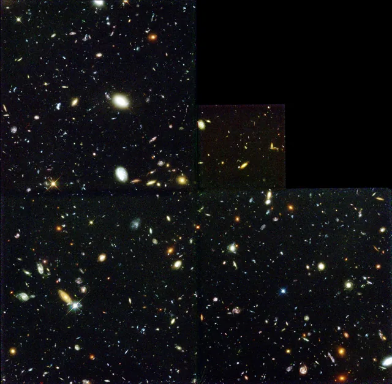
查看全图1992系外世界
阿雷西博观测 · Wolszczan 与 Frail
首批确认的系外行星
脉冲星 PSR B1257+12 周围的行星得到确认。它们围绕恒星遗迹运行，与后来发现的类太阳恒星周围行星，需要分别看待。
1995系外世界
1998宇宙学
2005行星探测

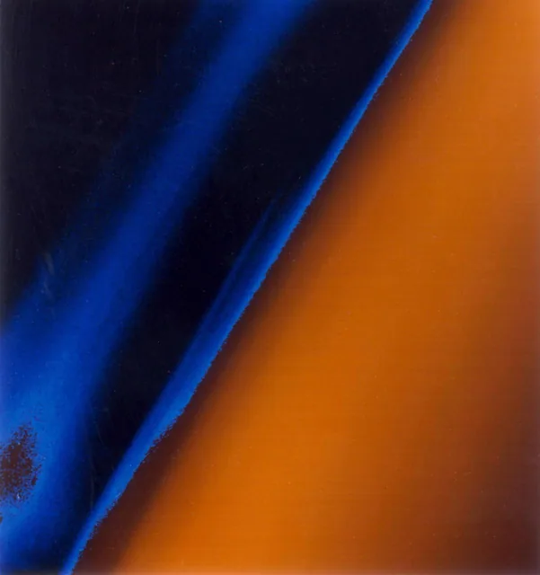
查看全图2010样本返回
2014小天体探测

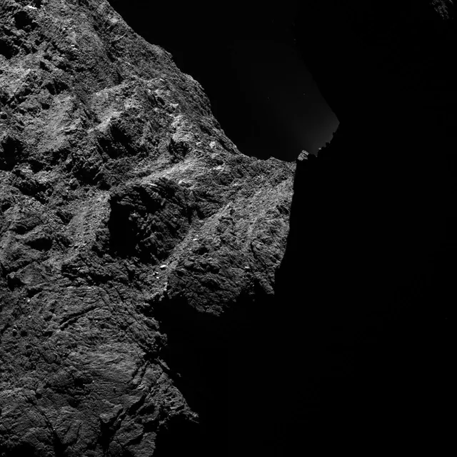
查看全图2015引力与时空
LIGO · 国际科学合作
第一次，直接探测到引力波
LIGO 两座探测器记录到双黑洞并合产生的 GW150914 信号，成果于 2016 年 2 月公布。天文学由观测电磁波，拓展到直接聆听时空的波动。
2017多信使天文
2019探月突破
2019黑洞成像

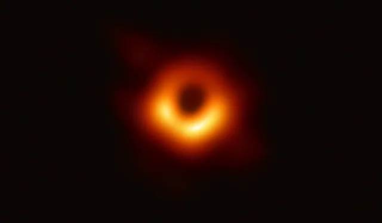
查看全图2020样本返回
2021行星探测
2022黑洞成像

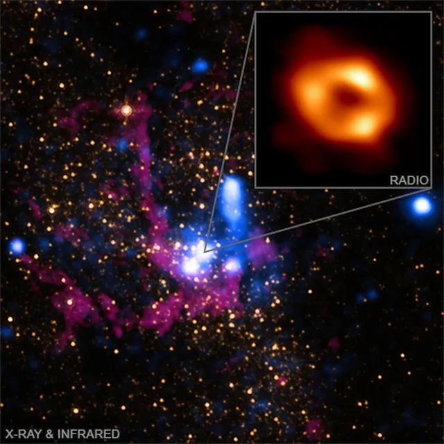
查看全图2022空间天文
查看全图 2023探月突破
2024样本返回
01 / 23世界共同的远方
图像之外 · 读懂宇宙
把好奇，再往前放一点
六个主题，按兴趣展开
01 / 观测的语言光，是宇宙寄来的消息同一片天空，换一个波段，就能看见另一层结构。＋
可见光、红外与 X 射线
天体会以不同波段发出或反射电磁辐射。可见光能呈现许多恒星与气体结构；红外观测帮助研究尘埃、较冷的天体和被尘埃遮掩的区域；X 射线则常用于研究高温气体、吸积和高能过程。
多波段合成图把这些信息放在一起，颜色往往用于区分波段或物质成分。看图时可以先留意轮廓是否重合，再比较不同颜色出现的位置。
光谱里的元素与运动
把光分解成不同波长，会得到光谱。原子和分子在特定波长吸收或发射光，留下可识别的特征；这些特征帮助研究天体成分、温度和运动。
谱线的波长变化也能提供速度线索。它不是仅靠一张彩色图片就能读出的信息，需要仪器观测与定量分析。
望远镜看得越远，就越接近过去
光传播需要时间。看到遥远星系时，接收到的是它在过去发出的光，所以深场影像也像一份跨越年代的记录。
光年是距离单位。对非常遥远的天体，还要区分光传播时间、红移和宇宙膨胀下的距离定义，不能简单把它们当成同一个数字。
02 / 恒星的生命从尘埃，到一颗恒星星云的形状、星团的颜色，都与恒星的成长有关。＋
引力怎样点亮恒星
分子云中的部分气体和尘埃在引力作用下聚集、坍缩，形成原恒星。当核心达到足够高的温度，持续的氢核聚变能够启动，恒星便进入主序阶段。
恒星并非依靠普通燃烧发光。核心聚变释放的能量向外传递，形成与引力相抗衡的压力。
质量决定演化的方向
恒星质量会显著影响它的亮度、寿命和结局。类似太阳的恒星会经历红巨星阶段，抛出外层后留下白矮星；更大质量恒星的演化可能涉及核心坍缩、超新星及致密遗迹。
行星状星云的名字容易让人误会：它与行星诞生不是同一回事，而是某些恒星晚期抛出的气体结构。
星团为什么值得放在一起看
星团提供了比较恒星的天然样本。疏散星团与球状星团的结构、恒星数量和历史各有特点；研究者通过亮度与颜色的分布推断其演化。
单凭照片颜色不能直接宣布一颗恒星的年龄。滤镜、波段映射和尘埃消光都会影响图像呈现。
03 / 黑洞与时空引力，怎样改变我们看到的宇宙从弯曲的星系像，到黑洞周围的发光物质。＋
引力透镜：星系团成为天然放大镜
大质量天体会使背景光的路径发生偏折。背景星系可能因此被放大、拉伸，甚至出现多个像，深场图中的细长弧线就是常见线索。
研究这些形变可以约束前景天体的质量分布，包括无法直接看见的暗物质；具体结论仍依赖观测与模型。
黑洞影像里，亮环是什么
事件视界以内的光无法逃离。黑洞图像中的明亮结构来自附近发光物质及其光线在强引力中的传播，中央较暗区域与黑洞阴影有关。
事件视界望远镜的影像是通过射电干涉观测重建出来的。它与相机单次拍照不同，也与计算机模拟不同；本图集会明确标注影像类型。
吸积、喷流与恒星遗迹
落向致密天体的物质可在吸积过程中释放能量。一些黑洞系统还伴随喷流；喷流来自周围的物质与磁场环境，并非从事件视界内部射出。
超新星遗迹、脉冲星和黑洞也不是同一种天体。它们共同帮助我们理解恒星的结局与高能物理，但需要分别辨认。
04 / 宇宙学宇宙的过去，留在今天的观测里深场、微波背景与星系团，提供彼此补充的线索。＋
红移与膨胀
宇宙膨胀会使遥远天体发出的光在传播过程中被拉长，波长向红端移动，这称为宇宙学红移。它是研究宇宙演化的重要观测量。
红移与距离的关系涉及宇宙学模型。不能把某张红色星系图片的色调直接当作红移测量值。
微波背景：早期宇宙的余晖
大爆炸后约 38 万年，宇宙冷却到电子与原子核能够结合，光开始更自由地传播。今天观测到的宇宙微波背景，是研究这一时期的重要线索。
全天图中不同颜色表示极微小的温度差异，不是宇宙表面肉眼可见的花纹。WMAP 等任务用精密测量研究这些起伏。
暗物质与暗能量，各自回答什么问题
暗物质这一概念用于解释多种引力观测中的质量线索；暗能量则与宇宙膨胀的加速有关。二者的物理本质仍在研究。
星系团碰撞、引力透镜和宇宙大尺度结构提供不同角度的证据。单张漂亮的照片并不足以直接看见或确认它们的本质。
05 / 系外行星在太阳系之外，寻找另一种世界许多行星没有被直接拍到，却能通过它们对恒星的影响被发现。＋
凌日：一小段变暗的星光
当行星从我们与恒星之间经过，恒星亮度可能出现周期性小幅下降。凌日深度和周期能为行星大小、轨道等提供线索，但还需要排除其他解释。
不是每颗行星都会从我们的视线方向凌日，因此这种方法具有观测选择效应。
视向速度与行星大气
行星与恒星围绕共同质心运动，恒星光谱中周期性的多普勒变化可用于寻找行星。凌日期间穿过行星大气的星光，还可能留下分子的吸收特征。
发现某种分子、位于宜居带或大小接近地球，都不能单独证明存在生命。对生命迹象的判断需要更完整的环境与多种观测证据。
06 / 太阳与行星离我们最近的宇宙，也仍有谜题从太阳的磁活动，到冰卫星表面与彗星喷流。＋
太阳的活动与空间天气
太阳耀斑是能量的快速释放，日冕物质抛射则涉及物质向外抛出，两者可以相关，但并不等同。磁场在这些活动中扮演重要角色。
太阳活动可能影响地球附近的空间环境。极光是带电粒子与高层大气相互作用产生的发光现象之一。
冰壳之下与古老表面
木卫二、土卫二等冰卫星，是研究地下海洋和行星环境的重要目标。裂纹、地形、喷流与引力等不同观测，提供彼此补充的线索。
小行星和彗星则保存太阳系早期物质的记录。飞掠、绕行与样本返回任务，让研究者把遥远影像与实验室测量联系起来。
看宇宙的不同方式六座天文台 · 六种观测视角＋
哈勃 Hubble
紫外 · 可见光 · 部分近红外恒星、星系结构、星系演化与深场。
韦伯 Webb
近红外 · 中红外早期星系、恒星形成、行星系统与大气。
钱德拉 Chandra
X 射线高温气体、超新星遗迹与致密天体环境。
费米 Fermi
伽马射线高能瞬变、脉冲星与活动星系等。
斯皮策 Spitzer
红外尘埃、较冷天体与恒星形成区；任务已结束。
太阳动力学天文台 SDO
多种太阳观测波段与磁场测量太阳表面、大气和磁活动的持续观测。